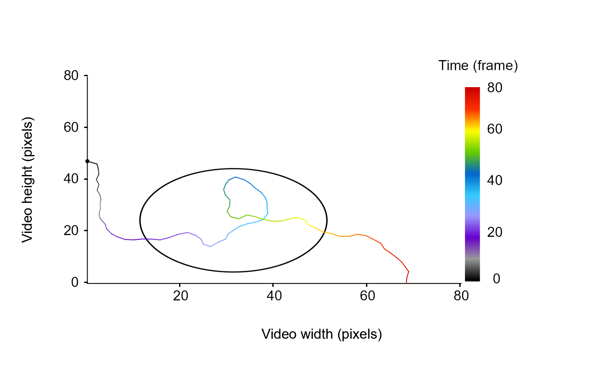
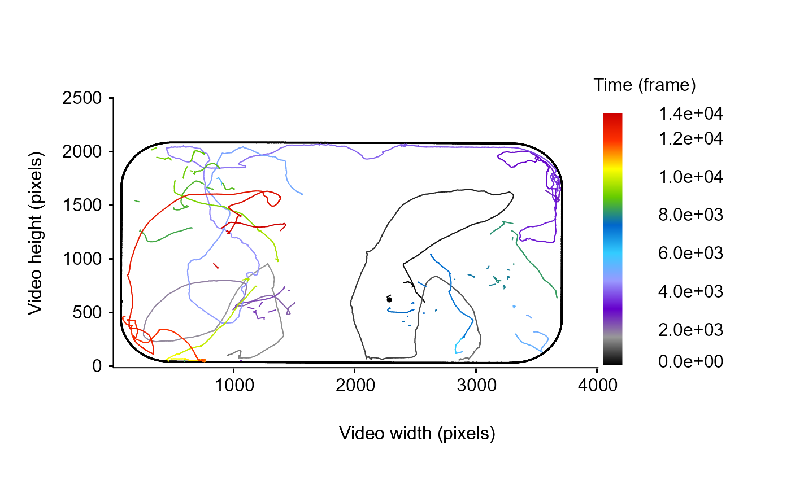

Compute the distance from the particle to the edge of an object (e.g., the arena) over its trajectory.
Source:R/dist2Edge.R
dist2Edge.RdGiven a data frame containing tracking information for a given tracklet and a data frame containing the coordinates of an object edges, this function compute the euclidean distance between the edge of the object (e.g., the arena) and the coordinates of the particle over its trajectory. The function then returns the distance between each points of the particle's trajectory and the closest point to the object edge.
Arguments
- df
A data frame containing at x, y coordinates named "x.pos", "y.pos", for a tracklet.
- edge
A data frame containing x, y coordinates named "x.pos", "y.pos" specifiyng the location of the arena or any object edge.
- customFunc
A function used to specify the formula allowing to compute the distance between a given object or arena edge and the particle over its trajectory. It is possible to call already implemented methods for Circular arena by calling customFunc = "CircularArena".
Value
This function returns a vector containing the distance between each points of the trajectory and the closest point of the object edge. Negative values indicate increasing distance from the edge of the object in the direction of its center (the particle is considered inside) and vice versa.
Examples
# Exemple 1: With a circular arena
set.seed(2023)
# generate a dummy tracklet
## start to specify some parameters to generate the tracklet
TrackL <-
100 # the length of the tracklet or a sequence to randomly sample tracklet's length
TrackDatTemp <-
trajr::TrajGenerate(sample(TrackL, 1), random = TRUE, fps = 1)
TrackDat <- list(
data.frame(
x.pos = TrackDatTemp[["x"]] - min(TrackDatTemp[["x"]]),
y.pos = TrackDatTemp[["y"]] - min(TrackDatTemp[["y"]]),
frame = TrackDatTemp[["time"]]
)
)
# simulate a circular arena of 20 pixels radius and centered on the particle trajectory
arenaEdge <- as.data.frame(MoveR::circles(mean(TrackDat[[1]][["x.pos"]]),
mean(TrackDat[[1]][["y.pos"]]),
radius = 20,
draw = F))
str(arenaEdge)
#> 'data.frame': 500 obs. of 2 variables:
#> $ x.pos: num 51.3 51.3 51.3 51.2 51.2 ...
#> $ y.pos: num 24.4 24.7 25 25.2 25.5 ...
# draw the tracklet and the arena edge
MoveR::drawTracklets(TrackDat,
imgRes = c(80, 80),
add2It = list(points(
x = arenaEdge[["x.pos"]], y = arenaEdge[["y.pos"]], cex = 0.1
)))

# Compute the distance to the closest part of the edge based on the form of the arena (here circular)
# Negative values indicate increasing distance from the edge of the object in the direction of its center (the particle is considered inside) and vice versa.
MoveR::dist2Edge(TrackDat[[1]],
edge = arenaEdge,
customFunc = "CircularArena")
#> [1] 18.7823577 16.4582563 15.0931207 13.8661236 13.3560386 11.9547261
#> [7] 11.4459542 10.2583611 9.5002640 9.2819667 8.8674120 8.9262716
#> [13] 8.5717987 7.5194782 7.3970682 6.6314271 5.7005973 4.3696927
#> [19] 2.6922671 0.9774847 -0.8916157 -2.5470174 -4.7281222 -6.9042622
#> [25] -9.0843573 -9.9826310 -9.9314946 -8.7164378 -8.6621834 -10.8019596
#> [31] -12.5681811 -14.5678377 -16.3044508 -17.2888659 -16.7752263 -15.1299182
#> [37] -13.6746612 -12.2112189 -11.3865100 -9.8946198 -8.7661247 -7.6458672
#> [43] -6.6841949 -5.3150442 -4.1624307 -3.2247876 -4.3428585 -6.0950072
#> [49] -7.9107382 -10.1608787 -12.0041414 -14.4512557 -16.2626331 -18.4496583
#> [55] -18.7391554 -16.4947389 -15.3575868 -13.7685810 -11.9577174 -9.8816123
#> [61] -8.1258824 -6.2198935 -4.5553265 -3.9126760 -2.2274825 -0.4524672
#> [67] 1.6072252 3.5574979 5.4761156 6.9578644 9.0421032 11.2462184
#> [73] 12.7711594 14.0918038 15.6964364 17.5537930 19.2826263 20.7471894
#> [79] 22.3828249 23.1623846 24.2888489
# Exemple 2: With a a polygonal arena, using a distance matrix to avoid tough computation
## Not run:
# Download the first dataset from the sample data repository
Path2Data <- MoveR::DLsampleData(dataSet = 1, tracker = "TRex")
Path2Data
#> [1] "C:\\Users\\quent\\AppData\\Local\\Temp\\RtmpIBGA5h\\MoveR_SampleData-main\\sample_1\\TRexOutput"
#> [2] "C:\\Users\\quent\\AppData\\Local\\Temp\\RtmpIBGA5h\\MoveR_SampleData-main\\sample_1\\ReferenceData\\DistMatrixFromArenaEdge_2602_ISA3080_Low_5.mov_1800.txt"
#> [3] "C:\\Users\\quent\\AppData\\Local\\Temp\\RtmpIBGA5h\\MoveR_SampleData-main\\sample_1\\ReferenceData\\RefDat_2602_ISA3080_Low_5.csv"
# Import the list containing the 9 vectors classically used for further computation
Data <- MoveR::readTrex(Path2Data[[1]])
# convert it to a list of tracklets
trackDat <- MoveR::convert2Tracklets(Data[1:7], by = "identity")
# load the distance matrix to the arena edge, an object or the location of one or several areas of interest (here we have created a distance map using ImageJ)
distMat <-
as.matrix(read.delim(Path2Data[[2]],
dec = "."))
# retrieve the value of the edge limit (1) to plot it
arenaEdge <-
stats::setNames(data.frame(which(distMat == 1, arr.ind = T)),
c("y.pos", "x.pos"))
# draw only the first tracklet
MoveR::drawTracklets(trackDat,
selTrack = 1,
add2It = list(points(
x = arenaEdge[["x.pos"]], y = arenaEdge[["y.pos"]], cex = 0.1
)))

# Retrieve the distance from the edge using the distance matrix,
# because it is tough to compute the distance to the closest part of the arena edge in this case
# we can use another sister function helping to retrieve the distance to the edge from the distance
# matrix
## NB: here NAs are introduced because some tracklets in the raw data have Inf values in x and y.pos, which usually produce a warning message
## here the warning has been silenced but in this case retrieving the distance from the edge should be preceded by a filtering step to remove Inf values (see \code{\link{filterTracklets}})
w <- getOption("warn")
options(warn = -1)
cbind(trackDat[[1]], MoveR::locaPos(distMat, trackDat[[1]], Fun = function(x) round(x, digits = 0)))[950:1000, ]
#> maj.ax angle min.ax x.pos y.pos identity frame
#> 950 25.16856 -2.2495432 NA 3007.739 184.11171 0 949
#> 951 22.54196 -2.3630631 NA 3008.192 182.75757 0 950
#> 952 21.43825 -2.3916571 NA 3004.497 181.63637 0 951
#> 953 20.67534 -2.4862382 NA 3002.908 181.31097 0 952
#> 954 23.18185 -2.5544212 NA 3001.939 177.72223 0 953
#> 955 23.06143 -2.5468886 NA 2998.755 175.28192 0 954
#> 956 18.99402 0.6965405 NA 2996.066 172.19162 0 955
#> 957 19.82391 0.6651486 NA 2994.120 168.42169 0 956
#> 958 21.30811 -2.2509794 NA 2989.896 165.04597 0 957
#> 959 18.93035 0.8842158 NA 2986.844 159.45665 0 958
#> 960 19.61641 -2.2721188 NA 2983.474 155.68787 0 959
#> 961 21.18234 -2.2575943 NA 2981.550 152.99445 0 960
#> 962 18.69484 1.0738502 NA 2980.304 151.27951 0 961
#> 963 19.35811 -2.2445836 NA 2980.413 151.63750 0 962
#> 964 16.80550 0.9879674 NA 2979.787 151.20000 0 963
#> 965 18.16243 0.7149539 NA 2980.345 151.66060 0 964
#> 966 18.18480 0.8497069 NA 2980.198 151.53703 0 965
#> 967 19.59727 0.7914248 NA 2980.264 152.14723 0 966
#> 968 23.34755 0.6060944 NA 2979.577 151.13496 0 967
#> 969 18.97597 0.7088809 NA 2980.506 151.58861 0 968
#> 970 18.99671 -2.4571209 NA 2980.360 151.21118 0 969
#> 971 20.21753 -2.5122445 NA 2980.617 151.22223 0 970
#> 972 21.26458 -2.4875453 NA 2980.571 151.08824 0 971
#> 973 20.60793 -2.5402927 NA 2981.024 150.42169 0 972
#> 974 20.80412 -2.5362704 NA 2981.241 150.33736 0 973
#> 975 21.04786 0.7443136 NA 2981.159 149.20454 0 974
#> 976 21.42217 0.7403687 NA 2980.098 147.82184 0 975
#> 977 24.46404 -2.4878116 NA 2979.643 147.45810 0 976
#> 978 24.77028 -2.2122121 NA 2977.995 145.14285 0 977
#> 979 22.28426 -2.1839714 NA 2977.509 142.60234 0 978
#> 980 21.64240 -2.1315374 NA 2976.693 139.54218 0 979
#> 981 22.88063 -2.1552153 NA 2974.349 136.41714 0 980
#> 982 22.80894 -2.1014969 NA 2972.467 132.35165 0 981
#> 983 20.27789 1.0418344 NA 2968.437 126.93414 0 982
#> 984 22.58809 -2.1856568 NA 2963.572 122.17919 0 983
#> 985 19.14518 0.9702182 NA 2958.912 114.72941 0 984
#> 986 22.19151 -2.2058880 NA 2953.823 109.57458 0 985
#> 987 26.07912 0.9731150 NA 2947.637 100.92179 0 986
#> 988 22.62057 -2.2105091 NA 2942.827 95.25946 0 987
#> 989 19.83150 1.0121182 NA 2937.799 85.52201 0 988
#> 990 23.40609 -2.2072537 NA 2931.343 80.03371 0 989
#> 991 20.19806 1.0806229 NA 2929.823 79.25000 0 990
#> 992 20.06984 1.0695091 NA 2930.572 80.65476 0 991
#> 993 20.28101 1.1777627 NA 2930.913 82.15000 0 992
#> 994 19.04386 1.1270846 NA 2930.387 83.20000 0 993
#> 995 17.77045 1.0332778 NA 2929.646 85.65987 0 994
#> 996 21.87505 0.8094050 NA 2928.196 86.23313 0 995
#> 997 21.90496 -2.3661096 NA 2927.581 87.75000 0 996
#> 998 20.16120 -2.3843305 NA 2926.831 89.06626 0 997
#> 999 20.54578 -2.5229805 NA 2926.729 91.34568 0 998
#> 1000 19.99702 0.3121337 NA 2925.987 91.94304 0 999
#> MoveR::locaPos(distMat, trackDat[[1]], Fun = function(x) round(x,
#> 950 139
#> 951 138
#> 952 137
#> 953 136
#> 954 133
#> 955 130
#> 956 127
#> 957 123
#> 958 120
#> 959 114
#> 960 111
#> 961 108
#> 962 106
#> 963 107
#> 964 106
#> 965 107
#> 966 107
#> 967 107
#> 968 106
#> 969 107
#> 970 106
#> 971 106
#> 972 106
#> 973 105
#> 974 105
#> 975 104
#> 976 103
#> 977 102
#> 978 100
#> 979 98
#> 980 95
#> 981 91
#> 982 87
#> 983 82
#> 984 77
#> 985 70
#> 986 65
#> 987 57
#> 988 50
#> 989 41
#> 990 35
#> 991 34
#> 992 36
#> 993 37
#> 994 38
#> 995 41
#> 996 41
#> 997 43
#> 998 44
#> 999 46
#> 1000 47
options(warn = w)
## End(Not run)